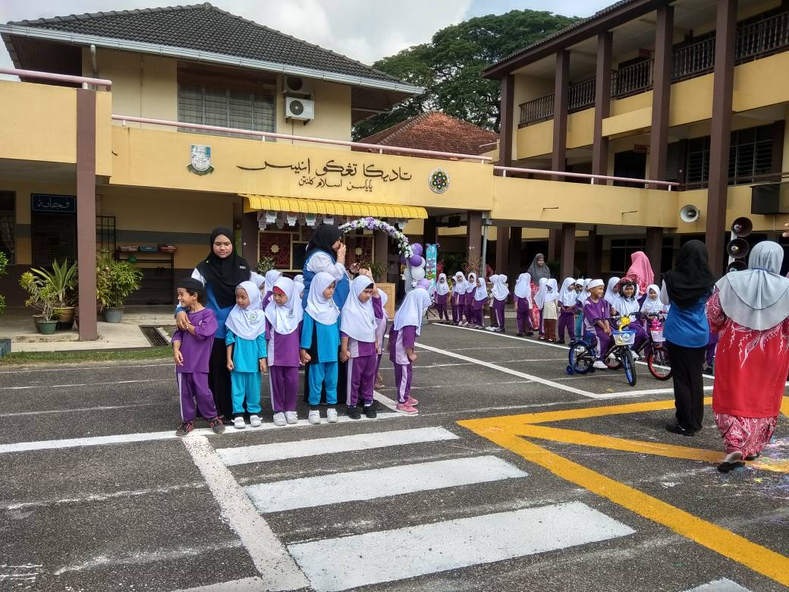
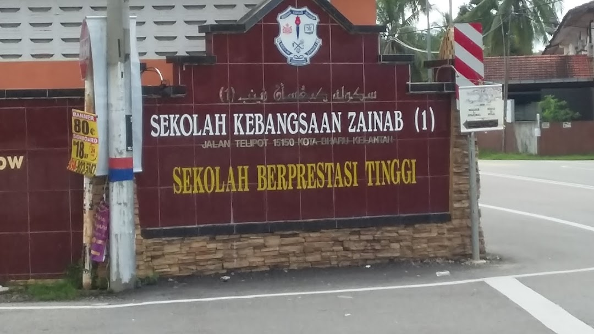
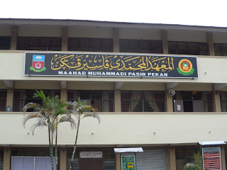
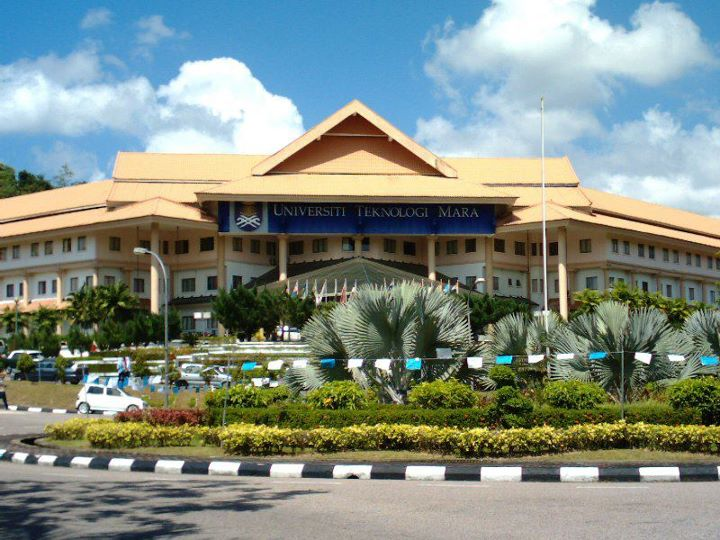

E D U C A T I O N
1. TADIKA TENGKU ANIS, KOTA BHARU

When I was 5 and 6 years old, I studied here. Ugh I still remember the day where I used to cried a lot at this school because I am such a crybaby (even until this day LOL)
2. SEKOLAH KEBANGSAAN ZAINAB 1, KOTA BHARU

3. MAAHAD MUHAMMADI PEREMPUAN PASIR PEKAN

And this is where I studied when I was 13 until 17 years old. I can tell that my secondary school is my hardest good bye ever since there's a lot of memories with my friends at there for 5 years. Our bittersweet memories!
4. UiTM MACHANG

After SPM, I further my studies at Universiti Teknologi Mara (UiTM) Kelantan, Machang branch in Information Management course for five semesters. Yes, this year will be my last semester as a Machangster's student and I'm going to miss each one of my friends here :(